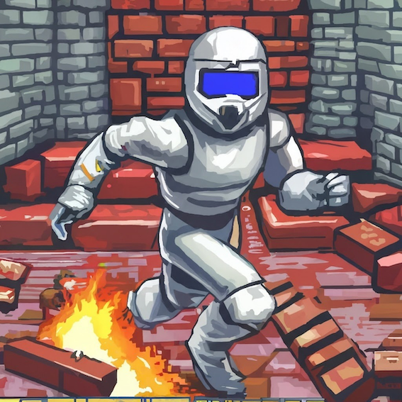
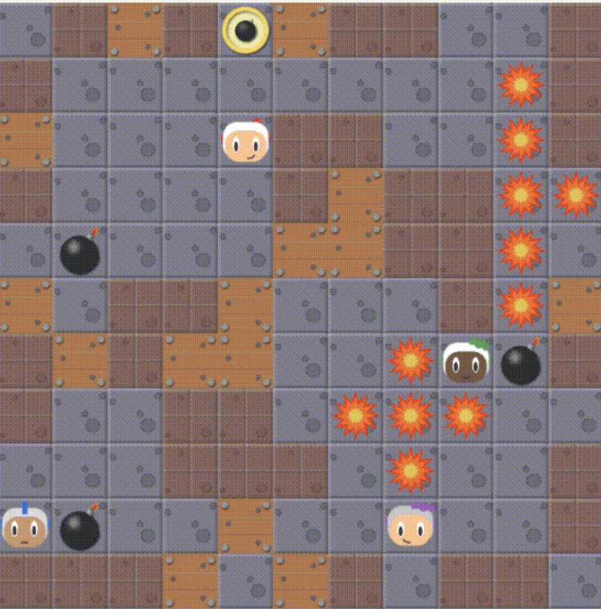
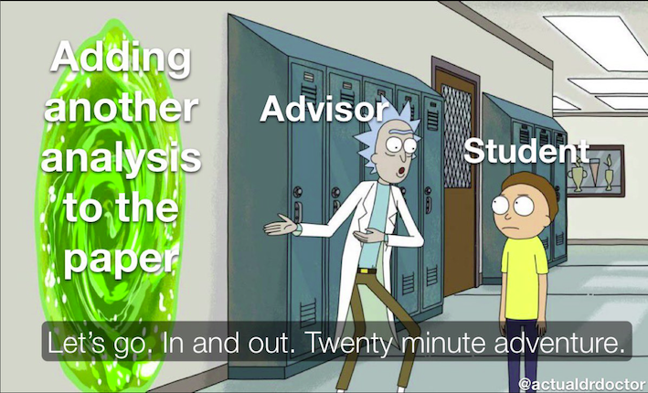
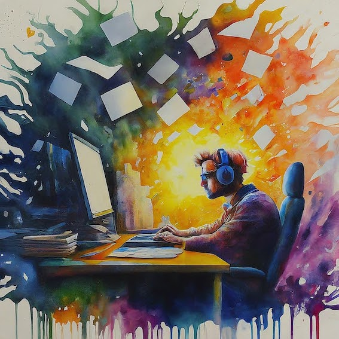
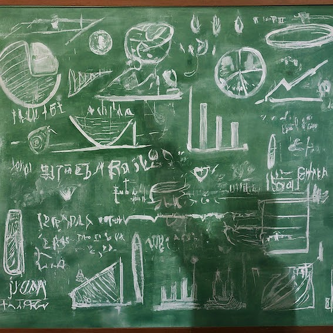
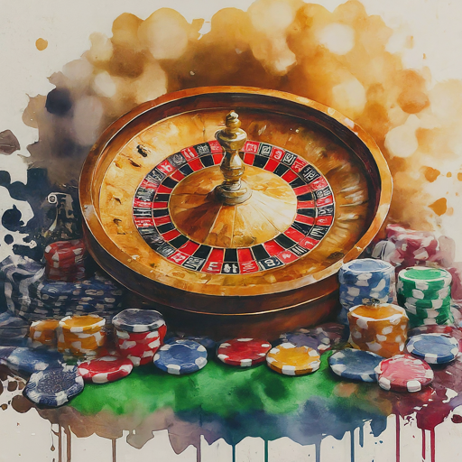

From NeurIPS to the Real World: Key Takeaways from Competing in Pommerman

“In theory there is no difference between theory and practice. In practice there is.” - Yogi Berra
Back in 2018, the Pommerman Competition was announced to take place at NeurIPS. Together with Chao, Bilal, and Matt (my supervisor), we submitted an agent that secured 2nd place in the Learning Agents category. Reflecting on this experience —and trying to generalize about participating in competitions— I think there are lessons learned that are applicable in industry settings, such as:
- Working with deadlines
- Dealing with constraints
- Focusing on solving problems
- Understanding trade-offs
- Taking ownership
- Building something from scratch
- Having skin in the game
First, let’s start with a short introduction to Pommerman.
What is Pommerman?
“Pommerman is a multi-agent environment based on the classic console game Bomberman. Pommerman consists of a set of scenarios, each having at least four players and containing both cooperative and competitive aspects. We believe that success in Pommerman will require a diverse set of tools and methods, including planning, opponent/teammate modeling, game theory, and communication, and consequently can serve well as a multi-agent benchmark."1
 A Screenshot of Pommerman, agents can place bombs that explode after some timesteps.
You can check this video, it’s quite easy to understand the game after seeing it.
The game resembles a console game, and the simulator allows you to control some of the four players (agents). Some game rules include:
- Each agent can execute one of six actions per timestep: do nothing, move in one of four cardinal directions, or drop a bomb.
- The board consists of passages (walkable), walls (indestructible), or wood (destructible with bombs).
- Maps are randomly generated.
- Bombs explode after 10 timesteps, destroying wood and any agents within their blast radius.
- There are power-ups for players.
- Each game episode lasts up to 800 timesteps.
- There is only a binary reward at the end of the game, +1 or -1.
- The agents only see a region around them, not the entire board (partially observable).
If you want to learn more about how we addressed the technicnal challenges you can check here.
Having a background on the competition, we can go into the lessons learned.
1. Working with Deadlines

When I learned about the competition, I had a conversation with my supervisor along the lines of:
S: "Have you seen this Pommerman competition?"
Pablo: "Yes, sounds interesting"
S: "Yeah, we should submit something"
Pablo: "Ok... but we only have like 3 months"
S: "Great! Plenty of time.
During my Ph.D., I had similar comments from previous supervisors. Conference deadlines are intense, meaning you have to work under pressure. I also thought it meant sacrificing quality.
Years later, my attitude towards deadlines has changed. I’ve even seen extreme cases of having just one week to produce something (hackathon style?).
Does it make sense to have such tight (impossible) deadlines? Maybe.
Now, I try to make sense with the following arguments:
-
Setting a high bar by your manager sometimes means they believe in you. “When our limits are pushed in a healthy, empowering way, it can help us fulfill our potential and provide us with the drive and motivation to excel."
-
Even if your manager doesn’t believe in you, deadlines force you to take action, make decisions, have ownership, collaborate, and produce something tangible.
I also think that once the deadline has passed, there should be some time to take a step back and analyze the outcome.
2. Dealing with Constraints
“Frugality drives innovation, just like other constraints do. One of the only ways to get out of a tight box is to invent your way out.” — Jeff Bezos
Pommerman had many distinct technical challenges: multi-agent, planning, learning, and communication, among others.
Trying to solve only one of the issues wouldn’t have resulted in a good agent for the competition.
-
One example to understand the challenges was the “lazy agent” problem2. What we experienced was that when training a team of two agents, one being stronger than the other, the weaker agent tended to just avoid any actions (it was just sitting duck). The reason was that if the agent started exploring, it would probably get blasted by its own actions, affecting the reward of the entire team.
-
Another example was the time limit for taking an action by the agents of 100 miliseconds.
“If an agent does not respond in an appropriate time limit for our competition constraints (100ms), then we will automatically issue them the Stop action and, if appropriate, have them send out the message (0, 0). This timeout is an aspect of the competition and not native to the game itself."1
Having multiple constraints is no different from “real-world” problems. You will never work on an “easy” problem. You will never start with perfect data. You won’t have enough time to try all the models you want. Your model/agent needs to run within certain limits (e.g., time or memory). Your training data is never complete. Inherently, you are always working with deadlines. Learning to navigate these limitations is crucial for a successful outcome.
3. Focusing on Solving Problems

NeurIPS is about research papers, but competitions try to foster new ideas based on solving problems. It’s a subtle difference, but one that’s closer to how industry works.
One should be careful not to lose focus on the main goal. I’ve seen two examples of how focus might dissipate:
-
Getting Sidetracked by Too Many Experiments. When you start working on a new problem, the focus is there, it’s clear. But after becoming comfortable with the problem, I tend to want more and more experiments. It’s essential to maintain focus and avoid getting sidetracked by too many experiments. Balance is key —push towards a complete solution without losing sight of the primary objective.
-
Losing Sight of the Main Metric. he second problem appears during evaluations and the metrics that matter. For example, in the Pommerman case, we modified the reward function of the agents and had plots of how the reward improved during training. However, the metric that really mattered was the “win rate” (defeating the the other team). In industry, this is similar —you have your model metrics, but there’s also a business metric. One needs to be careful not to forget that the business metric is what really matters.
4. Understanding Trade-offs
“People who are bred, selected, and compensated to find complicated solutions do not have an incentive to implement simplified ones.” ― Nassim Taleb
How do you approach a problem with many challenges and make progress in a short time? By understanding the trade-offs and making decisions.
-
Sometimes simple (incorrect) models are enough. One example was that the environment was partially observable, meaning you could only see a small window, not the entire board. It is clear that the information from the entire board is useful (because the enemies might be somewhere in the unseen regions). The problem was how to keep memory of seen regions in the past. One common approach, which is technically correct, is to add a recurrent network. However, that complicated the training. The second option, which was technically not entirely correct, was to assume that the last observation would remain until a new observation arrived. The benefit was not having to implement extra modules and just keep a simple vector of data. Results were good with the second, incorrect, approach.
-
Other times, complexity needs to be added to see real improvements. The second example is related to the training curriculum. It was difficult to select against which agents we should train. On one side, we started using static agents to teach the agents that blasting them was the way to win. However, in the real competition, that wouldn’t have worked. It was too simple. This time we needed to add complexity. Chao came up with an unbiased smart agent. That made an incredible difference in performance.
The lesson is to learn about trade-offs. Given the constraints, you can never solve everything perfectly. Finding the right amount of complexity will lead to the best results.
5. Taking Ownership

“If all you need to do is what you are told, then you don’t need to understand your craft. However, as your ability to make decisions increases, then you need intimate technical knowledge on which to base those decisions.” ― L. David Marquet
Every member of the team had a different expertise, but we all knew the problem and the goal we were working towards.
- We were independent in the sense that individually we had to think, implement, and validate our ideas in our specific area of expertise. We had ownership.
- We worked as a team because we cared about the result and reaching the goal. We embraced shared learnings —both things that worked and things that did not— which helped to boost trust among the team.
In the end, we took the lessons from everyone and put them together in the agent that was submitted to the competition.
6. Building from Scratch
“Take a simple idea and take it seriously.” — Charlie Munger
Working on the competition was a clear, simple idea. When we started, we only had the baseline that came with the simulator. As we experimented and learned, we documented ways to continue using the simulator beyond the competition. Post-NeurIPS, we had a robust codebase, knowledge, and new ideas, setting the stage for future projects.
The competition was the beginning, but later more than 5 research papers used the competition as a motivation and to perform experiments.
7. Skin in the game

“How much you truly ‘believe’ in something can be manifested only through what you are willing to risk for it.” Nassim Taleb
Before OpenReview, you could submit a paper, and if it did not get accepted, you got feedback. It could be terrible work, but still, you got feedback and no one needed to know about that terrible work you submitted. There was no penalty for submitting something incomplete. There was no skin in the game.
Competitions are different — by definition, there are winners, losers, and prizes. There is more at stake. Having skin in the game makes things more interesting and helps you learn in a distinct way.
The NeurIPS 2024 competition track is already out, I strongly suggest if you have time work on a submission, do it, you will learn a lot.